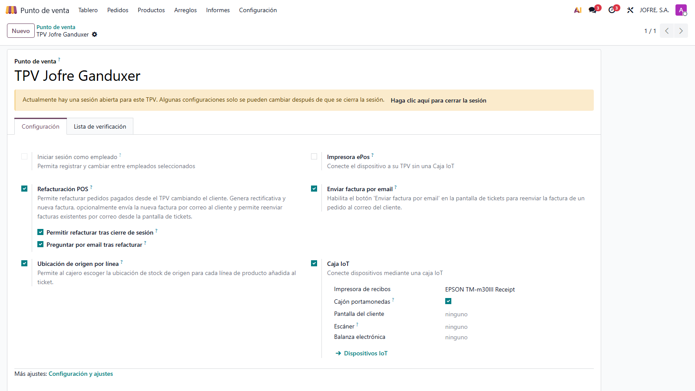
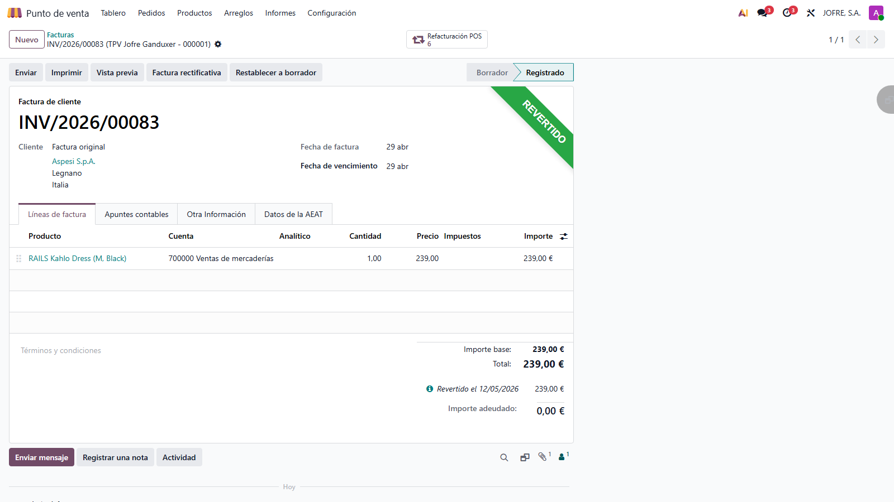
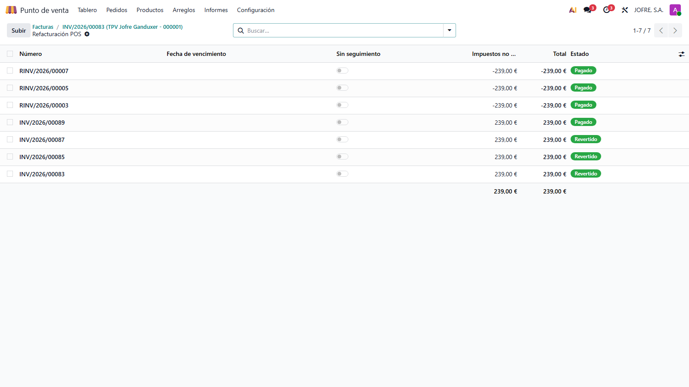

Refacturar pedidos POS pagados, navegar entre facturas relacionadas y enviar facturas por correo electrónico — todo desde el propio TPV.
En las ventas de TPV es habitual que un cliente solicite una factura nominativa después de salir con su ticket simplificado, o que pida cambiar el destinatario de una factura ya emitida. Resolver esto desde el backend requiere abrir contabilidad, emitir rectificativa, cambiar cliente y refacturar — un flujo lento y propenso a errores.
Este módulo añade ese flujo dentro del propio TPV. Con un solo botón en la pantalla de tickets, refactura el pedido cambiando el cliente, emite la rectificativa de la factura original y la nueva factura al cliente correcto, reasignando además los apuntes de pago de forma atómica.
↻ Botón Refacturar
Visible en la lista de tickets para pedidos pagados con factura emitida. Permite cambiar el cliente y reemitir la factura sin salir del TPV.
✉ Envío por correo
Botón para reenviar la factura de un pedido al correo del cliente, y opción para ofrecer el envío automático al terminar una refacturación.
🔗 Navegación entre facturas
Smart button en la vista de factura que enlaza la original, la rectificativa y la nueva factura sustitutiva. Un clic salta a la lista del trío completo.
🇪🇸 Localización española
Soporte automático de factura simplificada (l10n_es_pos) y Veri*Factu (l10n_es_edi_verifactu) cuando los módulos correspondientes están instalados.
Cada TPV puede activar las funciones de forma independiente. Ruta:
Punto de Venta > Configuración > Punto de Venta.

| Campo | Tipo | Descripción |
|---|---|---|
allow_reinvoice |
Boolean | Habilita el botón "Refacturar" en la pantalla de tickets. |
allow_reinvoice_closed_session |
Boolean | Permite refacturar incluso cuando la sesión POS ya está cerrada. Por defecto desactivado para forzar el control contable a través de la sesión abierta. |
prompt_email_after_reinvoice |
Boolean | Al terminar una refacturación, ofrece enviar la nueva factura al correo del nuevo cliente. |
allow_send_invoice_email |
Boolean | Habilita el botón "Enviar factura por email" para reenviar la factura de cualquier pedido facturado. |
En el TPV, abrir la lista de tickets y seleccionar el pedido a refacturar.
Pulsar el botón Refacturar en la barra inferior de la pantalla de tickets.
Elegir el nuevo cliente en la lista de partners.
El sistema emite la rectificativa de la factura original y genera la nueva factura al cliente correcto, reasignando los apuntes de pago.
Si está activa la opción correspondiente, se ofrece el envío de la nueva factura al correo electrónico del cliente.
Abrir la lista de tickets y seleccionar el pedido facturado.
Pulsar el botón Enviar factura por email.
Introducir o confirmar la dirección de correo. El sistema precarga el email del cliente si lo tiene en su ficha.
Abrir cualquiera de las facturas del trío: original, rectificativa o nueva sustitutiva.
En la barra de botones superior aparece el smart button ↻ Refacturación POS con el contador de facturas relacionadas.

Al pulsarlo se abre la lista con las facturas del trío (original + rectificativa + nueva) etiquetadas por su rol.

Cuando los módulos l10n_es_pos y/o
l10n_es_edi_verifactu están instalados, el flujo de
refacturación se adapta automáticamente:
| Aspecto | Comportamiento |
|---|---|
| Factura simplificada |
Antes de emitir la nueva factura se desmarca
is_l10n_es_simplified_invoice, de modo que la
nueva sea ordinaria y vaya al diario normal en lugar del
reservado a simplificadas.
|
| Causa de rectificación Veri*Factu |
Se asigna l10n_es_edi_verifactu_refund_reason en
la rectificativa out_refund:
R5 si la original era
simplificada,
R1 (Art. 80.1/80.2
LIVA y error de derecho) en el resto.
|
| Sustitución Veri*Factu |
La nueva factura recibe
l10n_es_edi_verifactu_substituted_entry_id
apuntando a la original, para que el envío AEAT reporte el
flujo como correction_substitution (método
"S - sustitución" AEAT).
|
account.move.reversal de Veri*Factu solo asigna estos
campos automáticamente cuando se invoca con
modify_moves(). La refacturación POS separa
rectificativa y nueva factura (vía refund_moves()) para
preservar la integridad de pagos, así que el módulo asigna los
campos a mano replicando la semántica del flujo nativo.
La refacturación no puede ejecutarse en las siguientes situaciones, para proteger la integridad contable:
| Modelo | Campos / Métodos añadidos |
|---|---|
pos.order |
Campos re_invoiced, reinvoice_ids.
Métodos action_pos_reinvoice,
action_send_invoice_email.
|
pos.config |
allow_reinvoice,
allow_reinvoice_closed_session,
prompt_email_after_reinvoice,
allow_send_invoice_email.
|
account.move |
pc_reinvoice_related_ids,
pc_reinvoice_related_count,
pc_reinvoice_role, acción del smart button
action_view_pc_reinvoice_related.
|
_reinvoice_break_reconciliation_reinvoice_reverse_original_reinvoice_clear_localization_flags_reinvoice_generate_new_invoice(old_move=None) — recibe la factura sustituida como argumento_reinvoice_reassign_payments_reinvoice_post_audit
Mínimas: point_of_sale y account. La
integración con la localización española es opcional y se activa
automáticamente si están presentes l10n_es_pos o
l10n_es_edi_verifactu.